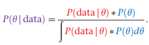
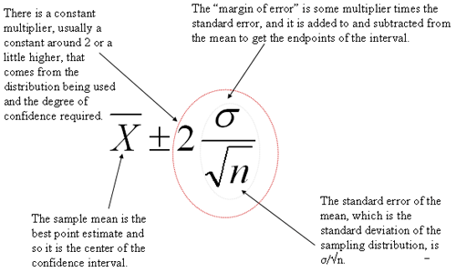
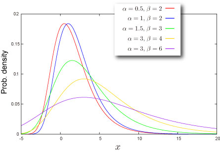

#bayes formula

above, both the prior and posterior distributions are pdfs
- to compute the likelihood, we first need to make an assumption about how the data was generated - this can be a probability distribution (normal, exponential etc.)
- likelihood == the probability of observing the data, given the hypothesis
- P(observing 4 pregnancies | we choose m10 for treatment)
- P(president Trump has covid | he would do whatever it takes to remain in power)
the area under the likelihood curve is not equal to 1.0 - how is that possible??
#solving for likelihood - example
Suppose we hypothesize that μ = 5.0, and assume that σ is known to be 0.5. And further suppose that we draw a random bacterium that lives x = 4.5 hours. We can ask, “What is the likelihood that x = 4.5 given that μ is 5.0 and σ = 0.5?” We will use the normal pdf to answer this question

#prior elicitation
#comparison between frequentist and bayesian inferences
frequentist approach is highly sensitive to the null hypothesis - whereas the bayesian method this will probably not be the case
#p-value
definition: the probability of observing something at least as extreme as the data, given that the null hypothesis is true (more extreme in the direction of the alternative hypothesis)
For example, a p value of 0.0254 is 2.54%. This means there is a 2.54% chance your results could be random (i.e. happened by chance). That’s pretty tiny. On the other hand, a large p-value of .9(90%) means your results have a 90% probability of being completely random and not due to anything in your experiment. Therefore, the smaller the p-value, the more important (“significant”) your results.

a p-value is needed to make an inference decision with the frequentist approach
#credible interval - the Bayesian alternative for confidence interval
a range for which the Bayesian thinks that the probability of including the true value is, say, 0.95
thus, a Bayesian can say that there is a 95% chance that the credible interval contains the true parameter value
#solved problem on how to calculate confidence intervals
https://www.statisticshowto.com/probability-and-statistics/confidence-interval/
#debunk common misconception about confidence interval

#frameworks under which we can define probabilities
- classical: outcomes equally likely --> have equal probabilities p(x=4) = 1/6
- frequentist: have a hypothetical infinite sequence of events -> look at the relative frequency of the events - how frequent did we observe the outcome that interests us out of the total
- empirical probability distribution: based on raw data
- law of large numbers: your estimate of Pr(X) gets closer and closer to the true probability when you use more trials
- Bayesian: personal perspective - your measure of uncertainty - based on a synthesis of evidence and personal judgement regarding that evidence
- prior probabilities are updated through an iterative process of data collection
#Bayesian approach


true positive rate | sensitivity | recall | probability of detection
P(ELISA is positive | person tested has HIV)
true negative rate | specificity
P(ELISA is negative | person tested has no HIV)
#review of probability distributions
Bernoulli - only two possible outcomes
X ~ B(p) -> P(X = 1) = p; P(X = 0) = 1 - p
f(X = x|p)) = f(x|p) = p^x(1-p)^(1-x)
E(X) = p
Var(X) = p(1-p)
Binomial - generalization of Bernoulli when we have n repeated trials
X ~ Bin(n,p)
E[X] = np
Var(X) = np(1-p)
#expected value of a random variable

#test statistics
- allow us to quantify how close things are to out expectations or theories

 15 (std) -> twice the amount we expect on average
15 (std) -> twice the amount we expect on average


- if your z statistic is more extreme that the critical value - you call it statistically significant

- we use t-statistic if we don't know the the true population std


- t-statistic has thicker tails, as we are estimating the population std and estimation adds more uncertainty -> as we get more data the t distribution approaches the z distribution
- large test statistics and smaller p values refer to samples that are extreme
#bayesian statistics
- frequentist
- Bayesian
- take what you currently know about the population -> use that to estimate what the population is (prior) -> this will adjust out belief about what the population is like
- posterior - instead of saying I will hit 4 stop lights, I will say it's 3 because of the new data - aggregation of what be believed before and the data we got now
#randomForest
- from the feature + class matrix -> subset random chunks -> create Decision trees from these sample sets
#PDF value greater than 1
- even if the pdf takes on values greater than 1, if the domain that it integrates over is less than 1, it can add up to only 1
- for a continuous random variable, we take an integral of a PDF over a certain interval to find its probability that X will fall in that interval
- what does a probability density at point x mean?
- if we know the mean and std, we know the entire distribution of probabilities
it means how much probability is concentrated per unit length (dx) near x, or how dense the probability is near x
#standard error

standard error quantifies the variation in the means from multiple sets of measurments
- bounds on the estimates of a population variable
- to present the skill of a predictive model
- they seek to quantify the uncertainty in a population parameter such as mean or std
- 95% CI is a range of values calculated from out data, that most likely includes the true value of what we are estimating
- smaller confidence interval == more precise estimate
- also help to facilitate trade-offs between models - matching CIs indicates equivalence between the models and might provide a reason to favor the less complex or more interpretable model
#to calculate margin of error
Critical Value * Standard deviation of the population
Critical Value * Standard error of the sample
critical value is either a t-score or z-score

- quantify and communicate the uncertainty in a prediction
- describe the uncertainty for a single specific outcome
- uncertainty comes from
- model
- noise in the input data
- larger than a confidence interval - as it takes into account the confidence interval and the variance in the output variable
- its computed as some combination of the estimated variance of the model and the variance of the outcome variable
- make assumptiosn - distributions of x and y and the predictors errors made by the model (residuals) are Gaussian
- PI (prediction interval) = yhat +/- z*sigma
- yhat - predicted value
- z - number of std from Gaussian distribution (1.96 for a 95% interval)

#Assumptions of multiple linear regression
* residuals are normally distributed
* no multicollinearity
* homoscedasticity - variance of error terms are similar across the values of the independent variables
#what are degrees of freedom (DOF)
they indicate the number of independent values that can vary in an analysis without breaking any constraints
the number of values that are free to vary as you estimate parameters
typically DOF = sample size - number of parameters we need to estimate
DOF == the number of observations in a sample that are free to vary while estimating statistical parameters
#how are the outliers in box plot determined

Extreme Value Theorem
- assumes that all components are identically distributed - this is not needed in central limit theorem
- CLT describes the limit of sums; EVT describes the limits of
- The central limit theorem states that if you have a population with mean μ and standard deviation σ and take sufficiently large random samples from the population with replacement
 , then the distribution of the sample means will be approximately normally distributed. This will hold true regardless of whether the source population is normal or skewed, provided the sample size is sufficiently large (usually n > 30). If the population is normal, then the theorem holds true even for samples smaller than 30. In fact, this also holds true even if the population is binomial, provided that min(np, n(1-p))> 5, where n is the sample size and p is the probability of success in the population. This means that we can use the normal probability model to quantify uncertainty when making inferences about a population mean based on the sample mean. [source]
, then the distribution of the sample means will be approximately normally distributed. This will hold true regardless of whether the source population is normal or skewed, provided the sample size is sufficiently large (usually n > 30). If the population is normal, then the theorem holds true even for samples smaller than 30. In fact, this also holds true even if the population is binomial, provided that min(np, n(1-p))> 5, where n is the sample size and p is the probability of success in the population. This means that we can use the normal probability model to quantify uncertainty when making inferences about a population mean based on the sample mean. [source] - question: what possible distributions might be considered candidates for the distribution for Mn as n -> infinity?
- degenerate random variable - a distribution assigning all of the probability to a single point -> P(x = c) = 1
- and we want to prevent the degenerate limit in order to have a distribution -> for CLT we apply a linear scaling (subtract population mean from xbar and divide by population standard deviation) -> that will give us a standard normal

- the three types of distribution in Extremal Types Theorme (I,II,III) have become known as the Gumbel, Frechet and Weibull types respectively == extreme value distributions
- each distribution has a location and scale parameter
- Frechet and Weibull have a shape parameter (alpha)
- the above theorem states that when Mn(max{X1, ... Xn}) is stabilized with suitable sequences {an} and {bn}, the corresponding normalized variable Mn* has a limiting distribution that must be one of the three types of extreme value distribution (G or F or W), regardless of the distribution F for the population - in this sense the EVT gives an extreme value analog of the central limit theorem
#Gumbel distribution


#Frechet distribution


#Weibull distribution
support -> x element of [0, inf)


- but it is inconvenient to always choose from the three distributions - better is to find a parameterisation which encompasses all three


- when the shape parameter is zero -> Gumbel; when it is > 0 -> Frechet; and when it is < 0 Weibull


- used to model the time between events
- how long will you wait before you get a message
- MLE for exponential distribution video
- the mle of the rate parameter is the inverse of the mean (1/sum(x1, x2, ..xn))
- mu is the location parameter
- beta is the scale parameter (sometimes lambda is used as a scale parameter which is equivalent to 1/beta)

#Weibull PDF
when shape parameter is 1 -> it defaults to exponential pdf

- GEV provides a model for the distribution of block maxima
- but choice of block is tricky
- too small ->bias in estimation
- large blocks -> large estimation variance